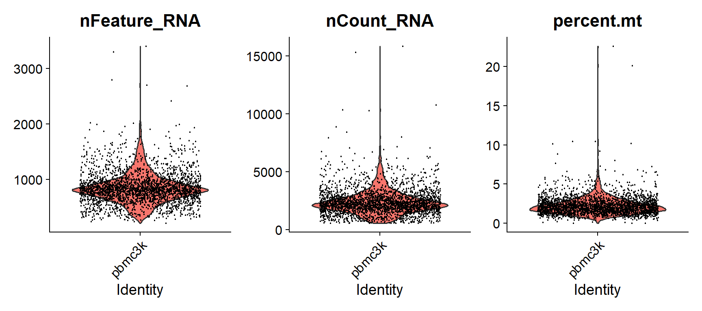
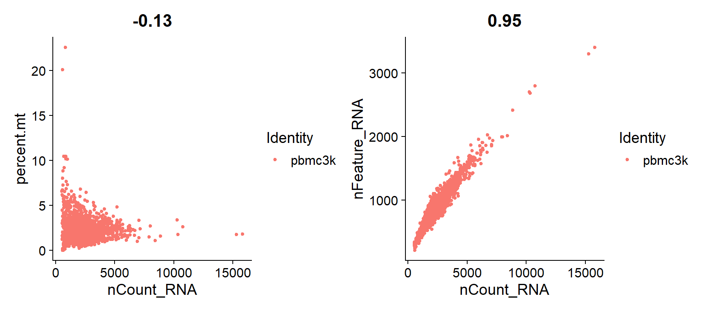
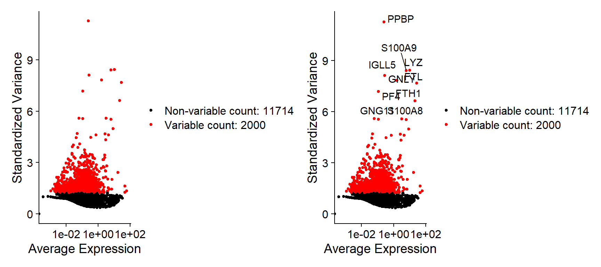
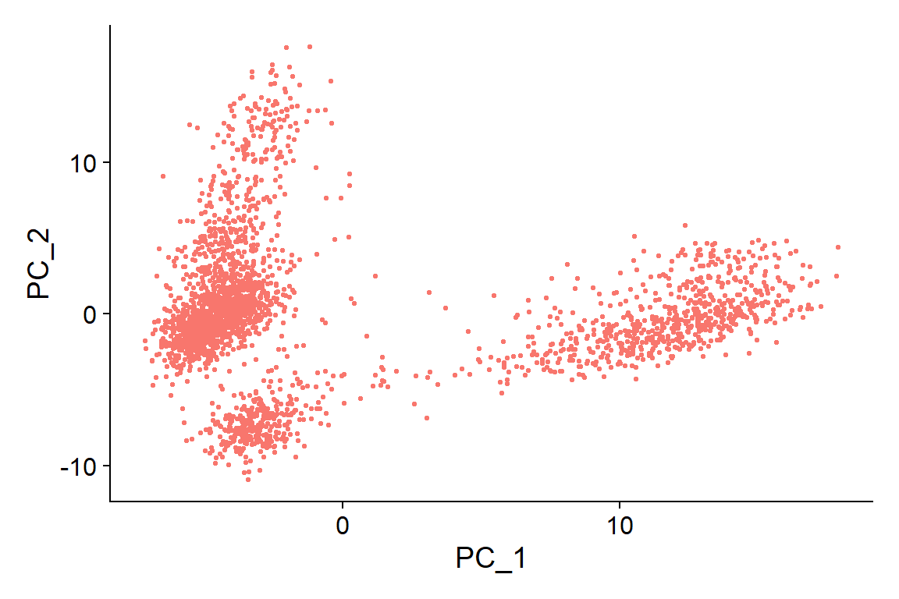
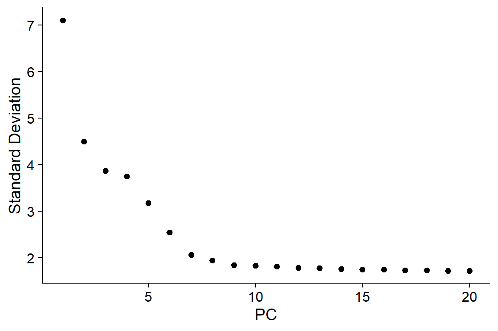
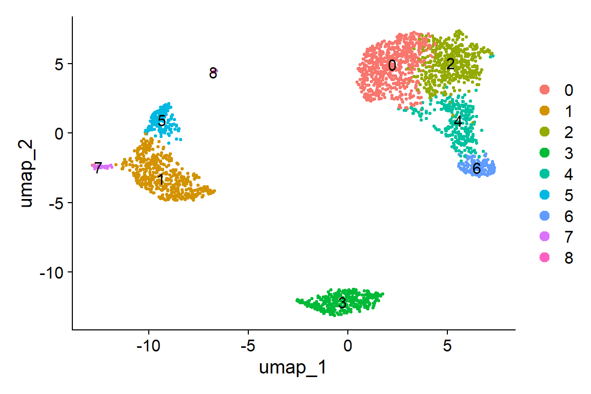
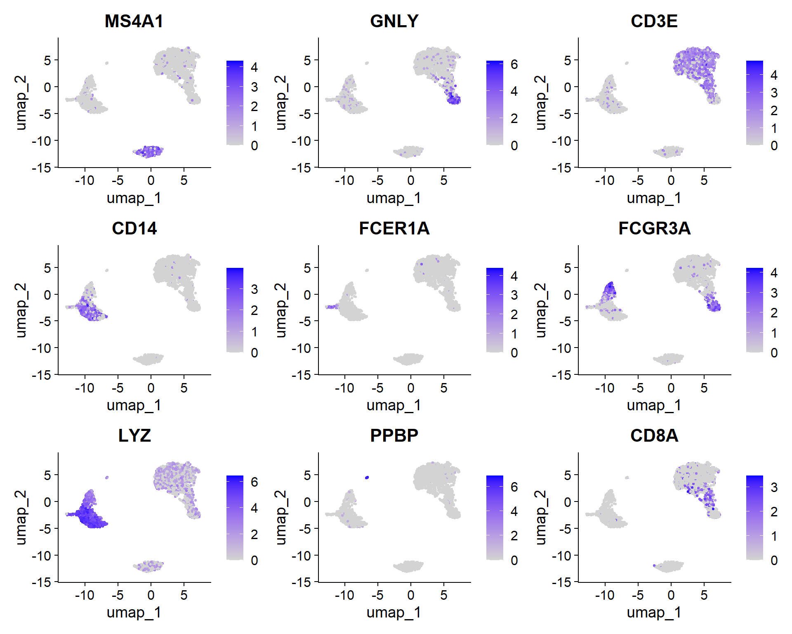
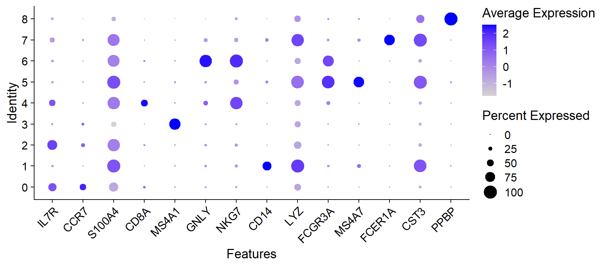
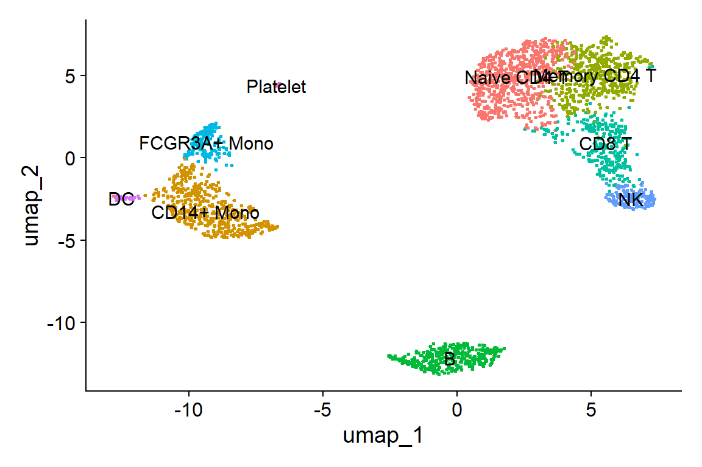

Bulk RNA-seq, like the one we analysed in P3, measures the average expression of each gene across thousands or millions of cells. However, tissues are mixtures of many different cell types, and a change in a bulk profile can be due to a change in gene expression or to a change in the proportion of cell types. Single-cell RNA-seq (scRNA-seq) measures gene expression in each individual cell, which allows us to discover which cell types are present in a sample, in which proportions, and which genes characterise each of them.
The most widely used scRNA-seq technology is the droplet-based 10x Genomics Chromium. Each cell is captured in an oil droplet together with a bead carrying a unique cell barcode and UMIs (Unique Molecular Identifiers), so that each sequenced read can be assigned to a cell and PCR duplicates can be collapsed. The Cell Ranger pipeline then produces, for each sample, a count matrix of genes × cells.
In this practical we will analyse scRNA-seq data with Seurat, the most widely used R package for single-cell analysis (Hao, et al., 2024). The standard workflow is:
10x Genomics provides many public datasets in Cell Ranger format (a
folder with the files barcodes.tsv,
genes.tsv/features.tsv and
matrix.mtx). In this practical we will use two datasets of
peripheral blood mononuclear cells (PBMC) from healthy
donors:
| Dataset | Chemistry | Cells | Use | Download |
|---|---|---|---|---|
| PBMC 3k | 10x v1 | ~2,700 | Worked example | Link |
| PBMC 10k | 10x v3 | ~11,500 | Your analysis | Link |
The practical consists of a worked example with the PBMC 3k dataset, following the Seurat guided clustering tutorial. Then, you will analyse the PBMC 10k dataset on your own. It is the same type of sample, but with four times more cells and a more sensitive chemistry, so you will be able to find more cell types and subtypes than in the example. Nobody will tell you which ones: annotating them is your job.
In this practical, we are going to use the RStudio integrated development environment (IDE) for R.
You will see different icons through the document, the meaning of which is:
: additional or useful
information
: a worked example
: a practical exercise
: a space to answer the exercise
: a hint to solve an exercise
: a more challenging exercise
Follow P2.Rmd instructions if you need to install
R and/or
RStudio
for either Windows or Linux.
You don’t need to install the packages in the UAB computers, only loading them.
install.packages("Seurat")
install.packages("dplyr")
install.packages("patchwork")
install.packages("ggplot2")
SingleR is not installed in the UAB
computers. If you want to do the optional automatic annotation
activity (section 8), install it yourself at the beginning of the
session (it takes a few minutes; it will be installed in your personal R
library):
BiocManager::install("SingleR") Optionally, you can install the
presto package, which makes the search for marker genes
(FindAllMarkers()) much faster. Seurat will use it
automatically if it is installed:
install.packages("remotes")
remotes::install_github("immunogenomics/presto")Load the packages:
library(Seurat)
library(dplyr)
library(patchwork)
library(ggplot2)With this worked example, we are going to analyse ~2,700 peripheral blood mononuclear cells (PBMC) from a healthy donor, sequenced with 10x Genomics. PBMCs are blood cells with a single, round nucleus: lymphocytes (T cells, B cells, NK cells), monocytes and dendritic cells. The goal is to identify, from the expression profile of each cell alone, which cell types are present in the sample.
Create a working directory named
Practical 4, and inside a folder named
data.
# bash code to create directories Navigate to the data
folder, download the PBMC
3k data using wget and uncompress it with
tar.
# bash code to download and uncompress the data tar -xzvf file.tar.gz
uncompresses a .tar.gz file. Explore the folder that has
been created: which files does it contain? Look at the first lines of
each of them with head (and zcat ... | head if
they are compressed).
The Read10X() function reads the output of Cell Ranger
and returns a count matrix with genes in rows and cells
(barcodes) in columns.
Remember to change the working directory or the path to properly load the data if it’s necessary:
# Load the PBMC dataset
pbmc.data <- Read10X(data.dir = "filtered_gene_bc_matrices/hg19/")
dim(pbmc.data)## [1] 32738 2700Let’s look at the counts of three genes (CD3D, TCL1A and MS4A1) in the first 30 cells:
pbmc.data[c("CD3D", "TCL1A", "MS4A1"), 1:30]## 3 x 30 sparse Matrix of class "dgCMatrix"##
## CD3D 4 . 10 . . 1 2 3 1 . . 2 7 1 . . 1 3 . 2 3 . . . . . 3 4 1 5
## TCL1A . . . . . . . . 1 . . . . . . . . . . . . 1 . . . . . . . .
## MS4A1 . 6 . . . . . . 1 1 1 . . . . . . . . . 36 1 2 . . 2 . . . . The .
values in the matrix represent 0s. Why do you think Seurat uses a
sparse matrix to store the data instead of a normal (dense)
matrix? Check it by comparing the memory used by both
objects:
dense.size <- object.size(as.matrix(pbmc.data))
sparse.size <- object.size(pbmc.data)
format(dense.size, units = "MB")## [1] "676.7 Mb"format(sparse.size, units = "MB")## [1] "28.5 Mb"Now we create the Seurat object, the container that will store the data and all the results of the analysis. We apply a first, very mild filter: we keep genes detected in at least 3 cells, and cells with at least 200 detected genes.
pbmc <- CreateSeuratObject(counts = pbmc.data, project = "pbmc3k",
min.cells = 3, min.features = 200)
pbmc## An object of class Seurat
## 13714 features across 2700 samples within 1 assay
## Active assay: RNA (13714 features, 0 variable features)
## 1 layer present: countsThe phenotype information of each cell (the equivalent of
colData() in P3) is stored in the meta.data
slot. Seurat has already calculated, for each cell, the total number of
molecules detected (nCount_RNA) and the number of genes
detected (nFeature_RNA):
head(pbmc@meta.data, 5)## orig.ident nCount_RNA nFeature_RNA
## AAACATACAACCAC-1 pbmc3k 2419 779
## AAACATTGAGCTAC-1 pbmc3k 4903 1352
## AAACATTGATCAGC-1 pbmc3k 3147 1129
## AAACCGTGCTTCCG-1 pbmc3k 2639 960
## AAACCGTGTATGCG-1 pbmc3k 980 521Before analysing the data we have to discard low-quality cells. The most common problems in droplet-based data are:
We calculate the percentage of mitochondrial reads with
PercentageFeatureSet(), using all genes whose name starts
with MT-:
pbmc[["percent.mt"]] <- PercentageFeatureSet(pbmc, pattern = "^MT-") In mouse,
mitochondrial gene names are written in lowercase: use
pattern = "^mt-". You can check it with
grep("^mt-", rownames(object), value = TRUE).
We visualize the three QC metrics:
VlnPlot(pbmc, features = c("nFeature_RNA", "nCount_RNA", "percent.mt"), ncol = 3)
plot1 <- FeatureScatter(pbmc, feature1 = "nCount_RNA", feature2 = "percent.mt")
plot2 <- FeatureScatter(pbmc, feature1 = "nCount_RNA", feature2 = "nFeature_RNA")
plot1 + plot2
We will keep cells with more than 200 and less than 2,500 detected genes, and less than 5% of mitochondrial reads:
pbmc <- subset(pbmc, subset = nFeature_RNA > 200 & nFeature_RNA < 2500 & percent.mt < 5)
pbmc## An object of class Seurat
## 13714 features across 2638 samples within 1 assay
## Active assay: RNA (13714 features, 0 variable features)
## 1 layer present: countsLooking at your plots, do these thresholds seem reasonable for this dataset? Would you change any of them? How many cells (and which percentage) have been removed? Thresholds are not universal: when you analyse your own dataset, you will need to choose (and justify!) your own.
Each cell has been sequenced at a different depth, so the counts are
not directly comparable between cells. The default method,
LogNormalize, divides the counts of each gene by the total
counts of the cell, multiplies by a scale factor (10,000) and
log-transforms the result:
pbmc <- NormalizeData(pbmc, normalization.method = "LogNormalize", scale.factor = 10000)Next, we select the genes that vary the most between cells (by default, the top 2,000). These highly variable genes are the most informative ones to distinguish cell types, and focusing on them reduces noise and computation time.
pbmc <- FindVariableFeatures(pbmc, selection.method = "vst", nfeatures = 2000)
# Top 10 most highly variable genes
top10 <- head(VariableFeatures(pbmc), 10)
top10## [1] "PPBP" "LYZ" "S100A9" "IGLL5" "GNLY" "FTL" "PF4" "FTH1"
## [9] "GNG11" "S100A8"plot1 <- VariableFeaturePlot(pbmc)
plot2 <- LabelPoints(plot = plot1, points = top10, repel = TRUE)
plot1 + plot2
Choose two of the top 10 genes and search for them in GeneCards. In which cell type are they expressed?
Before the PCA, we scale the data so that each gene has mean 0 and variance 1 across cells. This way, highly expressed genes do not dominate the analysis.
all.genes <- rownames(pbmc)
pbmc <- ScaleData(pbmc, features = all.genes)We run a Principal Component Analysis (PCA) on the highly variable genes:
pbmc <- RunPCA(pbmc, features = VariableFeatures(object = pbmc))
# Genes with the highest loadings in the first 5 PCs
print(pbmc[["pca"]], dims = 1:5, nfeatures = 5)## PC_ 1
## Positive: CST3, TYROBP, LST1, AIF1, FTL
## Negative: MALAT1, LTB, IL32, IL7R, CD2
## PC_ 2
## Positive: NKG7, PRF1, CST7, GZMB, GZMA
## Negative: CD79A, MS4A1, TCL1A, HLA-DQA1, HLA-DQB1
## PC_ 3
## Positive: PPBP, PF4, SDPR, SPARC, GNG11
## Negative: HLA-DQA1, CD79A, CD79B, HLA-DQB1, HLA-DPB1
## PC_ 4
## Positive: HLA-DQA1, CD79B, CD79A, MS4A1, HLA-DQB1
## Negative: VIM, IL7R, S100A6, IL32, S100A8
## PC_ 5
## Positive: GZMB, NKG7, S100A8, FGFBP2, GNLY
## Negative: LTB, IL7R, CKB, VIM, MS4A7DimPlot(pbmc, reduction = "pca") + NoLegend()
How many PCs should we keep for the following steps? The elbow plot shows the standard deviation explained by each PC. We look for the point where the curve flattens (the “elbow”):
ElbowPlot(pbmc)
Where is the elbow? How many PCs would you use? There is no single correct answer, but the Seurat tutorial recommends to err on the higher side. Why do you think so?
Seurat groups the cells by building a k-nearest neighbours
graph in the PCA space (FindNeighbors()) and then
finding communities of highly connected cells in this graph
(FindClusters()). The resolution parameter
controls the granularity: higher values give more clusters.
pbmc <- FindNeighbors(pbmc, dims = 1:10)
pbmc <- FindClusters(pbmc, resolution = 0.5)## Modularity Optimizer version 1.3.0 by Ludo Waltman and Nees Jan van Eck
##
## Number of nodes: 2638
## Number of edges: 95927
##
## Running Louvain algorithm...
## Maximum modularity in 10 random starts: 0.8728
## Number of communities: 9
## Elapsed time: 0 seconds# number of cells in each cluster
table(Idents(pbmc))##
## 0 1 2 3 4 5 6 7 8
## 684 481 476 344 291 162 155 32 13To visualize the clusters we use UMAP, a non-linear dimensionality reduction that places similar cells close to each other in two dimensions:
pbmc <- RunUMAP(pbmc, dims = 1:10)
DimPlot(pbmc, reduction = "umap", label = TRUE)
Run
FindClusters() again with resolution = 0.2 and
resolution = 1.2. How many clusters do you get in each
case? Note that the clusters were computed on the PCA, not on the UMAP:
why do you think Seurat does not cluster directly on the two UMAP
dimensions?
To avoid overwriting your results, save the
new object with a different name
(e.g. pbmc.test <- FindClusters(pbmc, resolution = 0.2)).
Marker genes are genes that are differentially
expressed in one cluster compared to all the other cells.
FindAllMarkers() tests every cluster against the rest (by
default, with a Wilcoxon rank-sum test):
pbmc.markers <- FindAllMarkers(pbmc, only.pos = TRUE)
# top 3 markers of each cluster
top3 <- pbmc.markers %>%
group_by(cluster) %>%
dplyr::filter(avg_log2FC > 1) %>%
slice_head(n = 3) %>%
ungroup()
top3## # A tibble: 27 × 7
## p_val avg_log2FC pct.1 pct.2 p_val_adj cluster gene
## <dbl> <dbl> <dbl> <dbl> <dbl> <fct> <chr>
## 1 3.75e-112 1.21 0.912 0.592 5.14e-108 0 LDHB
## 2 9.57e- 88 2.40 0.447 0.108 1.31e- 83 0 CCR7
## 3 1.15e- 76 1.06 0.845 0.406 1.58e- 72 0 CD3D
## 4 0 6.65 0.975 0.121 0 1 S100A8
## 5 0 5.65 0.909 0.059 0 1 LGALS2
## 6 0 6.18 0.996 0.215 0 1 S100A9
## 7 2.89e- 90 1.31 0.947 0.465 3.97e- 86 2 IL32
## 8 1.06e- 86 1.33 0.981 0.643 1.46e- 82 2 LTB
## 9 8.79e- 71 1.06 0.922 0.432 1.21e- 66 2 CD3D
## 10 0 6.91 0.936 0.041 0 3 CD79A
## # ℹ 17 more rows What do the columns
pct.1, pct.2, avg_log2FC and
p_val_adj mean? Which is more convincing as a marker: a
gene with pct.1 = 0.95 and pct.2 = 0.10, or a
gene with pct.1 = 0.95 and
pct.2 = 0.80?
?FindMarkers
We can visualize the expression of markers on the UMAP
(FeaturePlot()), as violin plots (VlnPlot())
or summarise many genes and clusters at once with a
DotPlot(), where the colour represents the average
expression and the size the percentage of cells of the cluster
expressing the gene:
FeaturePlot(pbmc, features = c("MS4A1", "GNLY", "CD3E", "CD14", "FCER1A",
"FCGR3A", "LYZ", "PPBP", "CD8A"))
canonical.markers <- c("IL7R", "CCR7", "S100A4", "CD8A", "MS4A1", "GNLY", "NKG7",
"CD14", "LYZ", "FCGR3A", "MS4A7", "FCER1A", "CST3", "PPBP")
DotPlot(pbmc, features = canonical.markers) + RotatedAxis()
This is the step that requires biological knowledge. For PBMCs, the following canonical markers are well known:
| Markers | Cell type |
|---|---|
| IL7R, CCR7 | Naive CD4+ T |
| IL7R, S100A4 | Memory CD4+ T |
| CD8A | CD8+ T |
| MS4A1 | B |
| GNLY, NKG7 | NK |
| CD14, LYZ | CD14+ Monocytes |
| FCGR3A, MS4A7 | FCGR3A+ Monocytes |
| FCER1A, CST3 | Dendritic cells (DC) |
| PPBP | Platelets |
Using the
FeaturePlot(), the DotPlot() and the table of
markers, assign a cell type to each cluster before looking at the
solution below. Which pairs of cell types are the most difficult to
distinguish? Why?
Once each cluster has a name, we rename the identities of the cells:
new.cluster.ids <- c("Naive CD4 T", "CD14+ Mono", "Memory CD4 T", "B", "CD8 T",
"FCGR3A+ Mono", "NK", "DC", "Platelet")
names(new.cluster.ids) <- levels(pbmc)
pbmc <- RenameIdents(pbmc, new.cluster.ids)
DimPlot(pbmc, reduction = "umap", label = TRUE, pt.size = 0.5) + NoLegend()
The order of the clusters can
change between Seurat versions or with different parameters.
Always check that the names you assign match the
markers of each cluster (for example, with the DotPlot()
above).
Finally, we can calculate the proportion of each cell type in the sample:
cell.types <- data.frame(table(Idents(pbmc)))
colnames(cell.types) <- c("CellType", "Cells")
cell.types$Percentage <- round(100 * cell.types$Cells / sum(cell.types$Cells), 1)
cell.types## CellType Cells Percentage
## 1 Naive CD4 T 684 25.9
## 2 CD14+ Mono 481 18.2
## 3 Memory CD4 T 476 18.0
## 4 B 344 13.0
## 5 CD8 T 291 11.0
## 6 FCGR3A+ Mono 162 6.1
## 7 NK 155 5.9
## 8 DC 32 1.2
## 9 Platelet 13 0.5 Make a
publication-quality bar plot of the proportion of each cell type with
ggplot2 (P2). Are these proportions what you would expect
in the blood of a healthy person?
Save the final object so that you don’t need to repeat the whole analysis:
saveRDS(pbmc, file = "pbmc3k_final.rds")
# To load it again: pbmc <- readRDS("pbmc3k_final.rds") Optional activity: automatic
annotation. Besides manual annotation, there are tools that
annotate cells automatically by comparing them to a reference dataset of
known cell types. One of them is the Bioconductor package SingleR.
As reference we will use the Monaco immune dataset
(Monaco et al., 2019), with the expression profiles of 29 immune cell
types sorted from human blood. It is distributed by the
celldex package, but we provide it as an R file (MonacoImmuneData_reference.rds,
20 MB, also available in the Moodle), so you do not need to install
celldex. Download it to your working directory with
wget:
wget https://marta-coronado.github.io/TAB/P4/MonacoImmuneData_reference.rdsYou only need to install SingleR (see
section 2.1), because it is not installed in the UAB computers. This
activity is optional: if you do it, compare the
predicted labels with your manual annotation. Do they agree? In which
cell types do they disagree, and why?
# Installation (only once; SingleR is NOT installed in the UAB computers)
BiocManager::install("SingleR")
library(SingleR)
library(SummarizedExperiment)
# Load the reference dataset (genes x reference samples, with their cell type labels)
ref <- readRDS("MonacoImmuneData_reference.rds")
table(ref$label.fine)
# SingleR compares the normalized expression of each cell with the reference
pred <- SingleR(test = GetAssayData(pbmc, layer = "data"),
ref = ref,
labels = ref$label.fine)
# Add the predicted labels to the Seurat object and plot them
pbmc$singler <- pred$labels
DimPlot(pbmc, group.by = "singler", label = TRUE, repel = TRUE) + NoLegend()
# Compare with the manual annotation: rows = your clusters, columns = SingleR labels
table(Idents(pbmc), pbmc$singler)Following the PBMC 3k example, analyse the PBMC 10k dataset. Your main goal is to identify and annotate as many cell types and subtypes as you can, and compare them with the ones found in the worked example.
Some advice:
.gz) and
the genes are in features.tsv.gz. Read10X()
reads both formats: give it the folder that contains the three
files.as.matrix() (~2.7 GB), calculate how much it would take: a
dense matrix stores every value as a number of 8 bytes.# number of values in the matrix x 8 bytes, converted to MB
dense.mb <- nrow(data) * ncol(data) * 8 / 1024^2
# real size of the sparse matrix, in MB
sparse.mb <- as.numeric(object.size(data)) / 1024^2
c(dense = dense.mb, sparse = sparse.mb)
# fraction of zeros: 1 - (number of non-zero values / total number of values)
1 - Matrix::nnzero(data) / (nrow(data) * ncol(data))features = all.genes). The scaled matrix is dense (genes ×
cells). With 10,000 cells it is better to scale only the 2,000 highly
variable genes, which is the default behaviour of
ScaleData() when we do not give the features
argument. It is enough, because the PCA only uses the highly variable
genes:obj <- ScaleData(obj) # scales only VariableFeatures(obj)
obj <- RunPCA(obj, features = VariableFeatures(object = obj))FindAllMarkers() can be slow. Install presto
(see section 2.1), or use the argument
max.cells.per.ident = 500.pct.1, low
pct.2):markers %>% group_by(cluster) %>% filter(p_val_adj < 0.05) %>%
arrange(desc(pct.1 - pct.2), .by_group = TRUE) %>% slice_head(n = 10)FeaturePlot() or DotPlot() that they are
expressed in that cluster and not in the others.Write a short article of your scRNA-seq analysis. You can use the Overleaf report sample. The article should contain the following sections:
DotPlot or FeaturePlot of the
markers used for the annotation)Upload this Rmd document and the figures you have
generated to your GitHub repository.